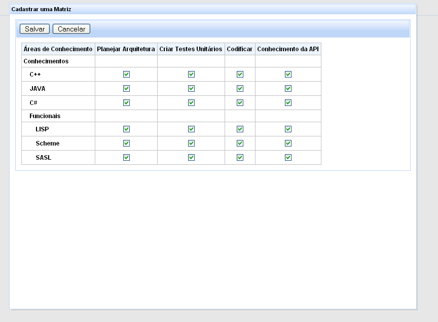

Universidade de São Paulo
Instituto de Matemática e Estatística
Departamento de Ciências da Computação
MAC-0499 Trabalho de Formatura Supervisionado
Sistema de Gerenciamento de Competências - SIGECO
Alexandre Pitta Guedes - pitta at linux.ime
Julien Renaut - oxygen at linux.ime
Yugo Watari - ywatari at gmail
Supervisor: Valdemar W. Setzer - vwsetzer at ime
Sumário
1. Introdução
1.1 Motivação
1.2 Objetivos
1.2.1 Implementar e testar o Sistema de Gerenciamento de Competência
1.2.2 Adquirir experiência de desenvolvimento no processo
1.3 Resumo da monografia
2. Conceitos básicos
2.1 Dado
2.2 Informação
2.3 Conhecimento
2.4 Competência
2.5 Matrizes de Competência
3. Histórico do desenvolvimento e experiência adquirida
3.1 Dificuldades iniciais
3.1.1 Importação de bibliotecas e criação do projeto inicial
3.1.2 Configurações iniciais
3.1.3 Escolha de um servidor de aplicações
3.2 Convenções e metodologias
3.2.1 Estilo do código e boas práticas de programação
3.2.2 Testes Unitários
3.2.3 Programação Pareada
3.2.4 Internacionalização
3.3 Dificuldades
4. Ferramentas utilizadas
4.1 Java
4.2 Subversion
4.2.1 Introdução
4.2.2 O Paradigma "lock - modify - unlock"
4.2.3 O Paradigma "copy - modify - merge"
4.2.3.1 A etapa "merge"
4.2.3.2 A etapa "conflict"
4.2.4 Conclusão
4.3 Maven2
4.3.1 Introdução
4.3.2 O "Project Object Model"
4.3.2.1 Identificação do Artefato
4.3.2.2 Estrutura em disco do pacote
4.3.2.3 Configuração por exceção
4.3.2.4 Definição das dependências
4.3.2.5 Possíveis configurações adicionais
4.3.3 O ciclo de "build" do projeto
4.3.3.1 generate-sources
4.3.3.2 compile
4.3.3.3 test-compile
4.3.3.4 test
4.3.3.5 package
4.3.3.6 install
4.3.3.7 deploy
4.3.4 O Repositório de Artefatos
4.3.5 Resolução de dependências
4.3.6 Conclusão
4.4 Checkstyle
4.4.1 Introdução
4.4.2 Funcionalidades
4.4.2.1 Javadoc Comments
4.4.2.2 Naming Conventions
4.4.2.3 Size Violations
4.4.2.4 Miscellaneous
4.4.3 Conclusão
4.5 Spring Framework
4.5.1 Introdução
4.5.2 Injeção de dependências
4.5.2.1 Motivação
4.5.2.2 A BeanFactory
4.5.3 Suporte ao Hibernate
4.5.4 Suporte a aspectos
4.5.5 Conclusão
4.6 Java Server Faces
4.6.1 Introdução
4.6.2 Managed Beans
4.6.2.1 Request
4.6.2.2 Session
4.6.2.3 Application
4.6.2.4 None
4.6.3 Arquitetura baseada em componentes
4.6.4 Suporte Total à linguagem de expressões (EL - Expression Language)
4.6.5 Vantagens
4.6.6 Conclusão
4.7 Java Persistence API (JPA)
4.7.1 Introdução
4.7.2 Entidade
4.7.3 Entity Manager
4.7.4 Java Persistence Query Language - (JPQL)
4.7.5 Conclusão
5. Avaliação do ambiente de desenvolvimento utilizado
5.1 Introdução
5.2 Aspecto gerencial
5.3 Aspecto de programação
5.4 Conclusão
6. Resultados obtidos
6.1 Características do sistema produzido
6.2 Funcionalidades do sistema
6.2.1 Cadastramento de usuários
6.2.2 Cadastramento de matrizes
6.2.3 Preenchimento de matrizes de competências
6.2.4 Consulta de matrizes preenchidas
6.2.5 Busca de usuários cadastrados pelas suas competências
6.2.6 ##
6.2.7 ##
7. Sugestões de extensões
7.1 Subsistema de Permissão
7.2 Sistemas Múltiplos
7.3 Currículo de competências de usuário
8. Referências
A inspiração para este Trabalho de Conclusão de Curso foi o artigo "Dado, Informação, Conhecimento e Competência"
[SET] de autoria
do
Professor Valdemar W. Setzer. Neste artigo o autor discute as definições mencionadas em seu título mas também extende-se além das mesmas definindo
Matrizes de Competência e suas aplicações. Conversando com o Professor e baseando-se no artigo foi proposta a elaboração de um sistema para criação, preenchimento e busca de Matrizes de Competência, e extendendo as
implementações que ele havia dirigido, citadas no artigo.
1.2.1 - Implementar e testar o Sistema de Gerenciamento de Competência
O Sistema de Gerenciamento de Competência é um software que permite gerenciar
matrizes de competência de inúmeros indivíduos, como por exemplo os profissionais de uma empresa, por exemplo.
A idéia é armazenar os currículos dos profissionais de forma sistemática e quantificada, podendo-se fazer consultas aos currículos de forma ágil.
As vantagens desse sistema são facilmente observadas se se considerar uma empresa com centenas ou milhares de funcionários ou então órgãos públicos, como rede municipal ou estadual de educação que precisa manter os currículos de cada um dos milhares de professores.
O maior objetivo do sistema com a digitalização e armazenamento quantificado dos currículos é agilizar os processos de alocação de recursos humanos em cargos e equipes, seleção de profissionais capazes de dar treinamentos em uma certa área de conhecimento, conhecer as áreas de conhecimento mais deficientes na empresa, promover o contato pessoal entre os profissionais para a transparência das informações, e muito mais.
1.2.2 - Adquirir experiência de desenvolvimento no processo
Além da elaboração do software, nosso objetivo neste TCC foi adquirir experiência de desenvolvimento. Queríamos aprender como configurar um ambiente de desenvolvimento ágil e prático
que permitisse facilmente o gerenciamento e compartilhamento de código fonte e a padronização do processo de compilação, teste e implantação da aplicação (implantação é o processo de executar a aplicação em um servidor de aplicações). Além disso, queríamos usar tecnologias recentes
na construção de
software como
Hibernate (arcabouço de mapeamento entidade-relacional e persistência de dados),
Spring Framework (arcabouço de injeção de dependências, programação orientada a aspectos, entre outras coisas)
e
Java Server Faces (arcabouço para a camada de visão de um
software para Internet).
1.3 - Resumo da monografia
No tópico
2 (Conceitos básicos) discorremos sobre o artigo de Setzer e sobre suas definições de
dado,
informação,
conhecimento,
competência e com isso explicamos o que é uma Matriz de Competências e o que é um Sistema de Gerenciamento de Competências.
A descrição do processo de desenvolvimento, as dificuldades que foram encontradas durante esse processo e a experiência que foi adquirida com ele são detalhadas no tópico
3 (Histórico de desenvolvimento e experiência adquirida).
Um dos objetivos deste trabalho foi
configurar um ambiente de desenvolvimento ágil e prático utilizando tecnologias recentes com ferramentas código livre. No tópico
4 (Ferramentas utilizadas), é descrito em detalhes cada uma das principais ferramentas que foram utilizadas para a criação desse ambiente de desenvolvimento.
O resultado da integração dessas ferramentas e a avaliação do ambiente de desenvolvimento
que foi configurado para a criação do Sistema de Gerenciamento de Competências estão descritos no tópico
5 (Avaliação do ambiente de desenvolvimento utilizado )
No tópico
6 (Resultados obtidos) é detalhado o sistema final que foi produzido para o gerenciamento de competências e no tópico
7 (Sugestões de extensões) são sugeridas algumas extensões interessantes que podem ser desenvolvidas para o sistema.
O objetivo do artigo que inspira este trabalho é tentar conceituar ou pelo menos caracterizar de forma clara o que é dado, informação, conhecimento e competência, termos que são facilmente confundidos, muitas vezes sendo tratados meramente como sinônimos.
Setzer define dado como "uma representação simbólica quantificada ou quantificável" e cita como exemplo que um texto que pode ser considerado dado, pois é representado por meio de letras (símbolos) às quais pode ser associado um sistema numérico discreto (portanto, quantificado por natureza). Assim, pode-se estender essa idéia para uma imagem, que pode ser mapeada como um conjunto de pixels e cada um destes pixels sendo um símbolo; o sistema numérico discreto seria o conjunto finito das cores que podem ser representadas por um pixel (usualmente os valores de 0 a 255 para cada uma das componentes vermelha, verde e azul).
Com essa definição é fácil perceber que se podem armazenar dados em um computador, pois este oferece estrutura para armazenamento e manipulação de símbolos que fazem parte de sistemas numéricos discretos.
Importante notar que um texto escrito em russo sendo lido por alguém que não compreende a escrita russa ainda constitui simplesmente uma cadeia de dados.
"Informação é uma abstração informal (isto é, não pode ser formalizada por meio de uma teoria lógica ou matemática), que está na mente de alguém, representando algo significativo para essa pessoa.".
Um texto (dado) ao ser lido e compreendido por uma pessoa é incorporado nesta como informação. Como exemplo tem-se a frase "a temperatura média de Paris em dezembro é de 5°C" que apesar de ser um dado, é incorporado como informação por cada pessoa que a lê e compreende, pois há uma associação mental com o conceito de frio. Note que se fosse 25°C, por exemplo, alguns poderiam associar com frio, outros com calor.
Qualquer pessoa pode obter informação por meio de de dados, se estes forem inteligíveis para ela. Mas uma pessoa também pode obter informação sem ter dados, como por exemplo, quando um vento sopra e sente-se frio. Não houve dados, não houve símbolos, o corpo percebe o clima frio e incorpora essa informação.
Enquanto dado é puramente sintático, informação contém necessariamente semântica. Disso conclui-se que o computador não armazena informações, mas apenas dados, pois o computador é puramente sintático. O que se faz geralmente é representar uma informação em forma de dados (gravando um som ou escrevendo um texto) e armazena-se esses dados no computador, mas para o computador serão apenas dados, para ele não há significado; esses dados transformam-se em informação se a pessoa que os recebe pode compreendê-los.
No artigo, conhecimento é caracterizado como "uma abstração interior, pessoal, de algo que foi experimentado, vivenciado, por alguém.". Conhecimento é subjetivo e envolve pragmática. Como exemplo são comparadas duas pessoas, uma que leu um manual de viagem sobre a cidade de Paris e outro que visitou a cidade. A primeira tem informações sobre Paris, já a segunda tem conhecimento, pois ela "experimentou" a cidade. Pode ser que a primeira tenha até mais informações que a pessoa que visitou a cidade, mas ela não possui nenhum conhecimento sobre Paris, no sentido estabelecido pelo artigo.
Pela
caracterização apresentada, podemos dizer que um bebê tem conhecimento pois ele pode reconhecer a mãe, mas por ainda não associar conceitos, não podemos dizer que ele tenha informações. O mesmo com os animais, que têm muito conhecimento, mas não tem informação. No entanto o que diferencia o ser humano na questão do conhecimento é que o este pode ter consciência do seu próprio conhecimento e por isso tentar descrevê-lo.
Apesar de o conhecimento não poder ser descrito completamente, pode-se fazê-lo parcialmente e conceitualmente em termos de informação, que como foi visto, pode ser representada em forma de dados.
Segundo o artigo, "competência é uma capacidade já demonstrada de produzir algo". Não basta ter conhecimento para ser competente em certa área (como Paris), é necessário demonstrar a capacidade de produzir algo como, por exemplo, servir de guia turístico pela cidade. Uma competência envolve uma certa habilidade sobre uma área de conhecimento. Voltando mais uma vez ao exemplo, poderíamos então ter o caso de uma pessoa ter a competência de servir de guia turístico (habilidade) em Paris (área de conhecimento).
Para haver competência é necessário então conhecimento e habilidade.
Assim como conhecimento, não é possível descrever totalmente uma competência. O que se pode fazer é criar graus de competência como por exemplo "iniciante", "avançado", "especialista", mas note-se que assim o que se tem é apenas a descrição de uma competência em termos de informação ou, se for colocada no computador, como dados.
Ao criar um sistema para gerenciar as competências das pessoas é muito importante observar que se está representando algo totalmente subjetivo (as competências das pessoas) em algo totalmente objetivo (dados). A perda da subjetividade pode trazer alguns erros, por isso, este tipo de sistema deve ser usado apenas como um filtro que proporciona uma lista de pessoas em potencial (dado os critérios de busca) e após isso essas pessoas deveriam ser analisadas subjetivamente, por meio de análise do currículo em forma de texto, entrevistas, etc.
2.5 - Matriz de Competências
Uma
matriz de competência é representada por
áreas de conhecimentos em suas linhas e em suas colunas as várias
habilidades aplicáveis a essas áreas de conhecimento. Cada célula dessa matriz armazena o grau de competência de uma habilidade (coluna) em certa área de conhecimento (linha).
Cada matriz representa as competências de um único usuário, que pode ter várias matrizes.
Por exemplo, a matriz de competência em idiomas de uma pessoa tem em suas linhas os idiomas como português, inglês, alemão, etc. e em suas colunas as habilidades aplicáveis a idiomas, como leitura, escrita, conversação, etc. e usando os graus de competência definidos para essa matriz, por exemplo, "ruim", "bom" e "excelente". Assim, a célula da área de conhecimento
inglês e habilidade
leitura armazena o grau de competência dessa pessoa em ler textos em inglês, e de acordo com sua competência, terá o valor "ruim", "bom" ou "excelente". Caso a pessoa não tenha competência - nem mesmo ruim - , a célula fica em branco.
| |
Habilidades |
| Leitura | Escrita | Conversação |
Áreas
de
conhecimento |
português |
excelente | bom | excelente |
| inglês |
ruim | |
|
| alemão | bom |
ruim |
bom |
3 - Histórico de desenvolvimento e experiência adquirida
3.1 - Dificuldades iniciais
3.1.1 - Importação das Bibliotecas e criação do projeto inicial
Como foram utilizados diversos arcabouços e ferramentas, havia uma grande quantidade de bibliotecas que era necessário importar. E muitas delas dependiam de outras bibliotecas comuns, isto é, utilizavam módulos dessas bibliotecas. Coletar todos estes arquivos e colocá-los corretamente no projeto foi feito pela ferramenta Maven2.
Para esta tarefa o Maven2 foi de extrema importância, pois ele cria a estrutura de diretórios inicial do projeto. Configurando-se corretamente
os arquivos pom.xml o Maven2 já busca na Internet e adiciona os arquivos comprimidos (jars) corretos na estrutura do projeto.
3.1.2 - Configurações iniciais
Como todos os arcabouços estavam bem documentados, não houve grandes problemas para definir as configurações iniciais para os arcabouços do projeto funcionarem.
3.1.3 - Escolha de um servidor de aplicações
Há diversas implementações de servidor de aplicações como por exemplo: JBOSS, OC4J, WebSphere etc. Dentre estas opções muitos tem extensões
e ferramentas adicionais que já vêm junto com o servidor, tendo uma vasta quantidade de bibliotecas comuns já incluídas no classpath do servidor, que é o conjunto de classes que estão disponíveis em tempo de execução.
Uma das grandes dificuldades encontradas foi o conflito de bibliotecas da aplicação e dos servidores de aplicações. Por exemplo o JBOSS somente
aceita JSF1.2, o OC4J somente aceita a implementação de JPA da própria Oracle, para executar outras implementações era necessário adicionar diversas bibliotecas
e configurar em muitos locais, etc.
Por esses motivos selecionamos o Tomcat que é a implementação mais simples, mais leve e com menos bibliotecas embutidas, evitando assim a ocorrência de problemas de bibliotecas conflitantes. O Tomcat mostrou-se o servidor de aplicações mais simples de se configurar e com boa interação com o Maven2 para executar as
aplicações nos servidor.
3.2 - Convenções e metodologias
3.2.1 - Estilo do código e boas práticas de programação
O estilo de código adotado foi o padrão da Sun. Como foi utilizada a ferramenta Checkstyle, garantir que o código estava todo na mesma convenção e devidamente
documentado foi simples, pois, onde não o estivesse, o Checkstyle lançava avisos. Portanto o código que não estava na mesma convenção ou não estava utilizando
convenções de boas práticas de programação foi identificado durante a programação e corrigido no momento, sem gerar nenhum trabalho posterior.
As convenções verificadas estão listadas na seção
4.4 (Checkstyle) desta monografia.
O objetivo dos testes unitários é verificar que as unidades funcionais do sistema comportam-se
conforme o esperado.
A idéia é testar o "contrato" (isto é, a interface) de cada unidade funcional, ou seja, a partir de determinada
entrada verificar que a saída esperada é encontrada.
Bons testes unitários devem ser independentes da implementação de fato. Desta forma, caso
alguma implementação precise ser modificada, o teste não será alterado. Caso a nova
implementação esteja correta os testes continuarão passando pois o contrato foi respeitado.
Um bom conjunto de testes unitários propicia uma maior liberdade por parte dos desenvolvedores
de realizarem alterações no código. Se alguma modificação tiver alterado o funcionamento
esperado de alguma unidade funcional, isso será acusado pelos testes.
Um problema comum de programadores é não executarem os testes frequentemente. Isso é solucionado pelo Maven2; antes de qualquer implantação no servidor de aplicação o Maven2 força a execução de todos os testes unitários, e se algum teste falhar a implantação é abortada.
3.2.3 - Programação Pareada
Inicialmente tivemos dificuldade em desenvolver o sistema pois estávamos cada um programando uma parte do sistema, sem os outros terem uma visão completa
do que cada um estava fazendo. Assim que percebemos a dificuldade, passamos a nos encontrar algumas vezes para praticar a programação pareada e
assim obtivemos uma visão detalhada de todo o sistema.
Até mesmo quando não podiamos estar no mesmo local programando pareadamente, procuravamos reservar o mesmo horário para desenvolver o sistema
e nos comunicávamos por VoIP (Voice over Internet Protocol), o que não traz as vantagens da programação pareada, como a verificação de código
pela pessoa que acompanha quem está programando, mas auxiliou na parte de compartilhar os detalhes de cada parte do sistema que cada um desenvolvia.
3.2.4 - Internacionalização
Uma das especificações do projeto dada pelo orientador é que a aplicação fosse produzida de forma que fosse fácil mudar a língua do sistema. A solução encontrada pela equipe foi criar
um arquivo de texto simples com chaves e valores. A aplicação lê esse arquivo e pega os valores para serem utilizados nas páginas. Portanto para traduzir o sistema
para outra língua, basta editar esse arquivo contendo todas as palavras utilizadas pelo sistema.
Inicialmente a dificuldade estava em nivelar o conhecimento dos participantes da equipe, pois cada um conhecia um pouco de parte das ferramentas. Isso foi resolvido com
algumas reuniões, realizando tutoriais e pequenas palestras internamente.
4 - Ferramentas utilizadas
Escolhemos
Java como linguagem de programação pelos seguintes motivos:
- Orientação a Objetos
- Conhecimento prévio dos membros da equipe
- Livre
- Facilidade para encontrar arcabouços em código aberto que resolvem problemas localizados (persistência de dados, middle-tier (camada intermediária entre os dados de aplicação e a interface visual), interface visual, etc)
- Esperança de que Java seja "A" linguagem de programação dos próximos anos (profissionalmente falando)
O
Subversion é um sistema para controle de versões de arquivos. Ele não se limita ao controle de códigos-fonte de programas
embora esse seja atualmente seu maior uso. A equipe original do Subversion era composta de antigos membros da equipe do CVS, outro sistema para controle de versões
mais antigo. Como já era de conhecimento público de que os maiores problemas do CVS não seriam resolvidos, esses antigos membros abandonaram o CVS para criar o
Subversion, uma versão melhorada do CVS refeita do zero onde as falhas do CVS não seriam repetidas.
Sua arquitetura baseia-se num repositório central de arquivos; os usuários fazem cópias locais de arquivos que estão no repositório para editá-las e depois enviá-las de volta
para lá. O Subversion funciona no paradigma "copy - modify - merge". Existe outro paradigma muito utilizado (notoriamente pelo Microsoft SourceSafe) que é o
"lock - modify - unlock". Vamos apresentar na sequência as diferenças fundamentais entre esses paradigmas e o motivo pelo qual o Subversion escolheu o
"copy - modify - merge".
4.2.2 - O Paradigma "lock - modify - unlock"
Neste paradigma, quando o usuário deseja realizar uma modificação em algum arquivo precisa conseguir o lock do arquivo, isto é, seu bloqueio. Estando com esse bloqueio o usuário realiza as
alterações que desejar e quando tiver terminado libera-o - operação também conhecida como "unlock".
A vantagem deste paradigma é que pessoas diferentes não irão tentar submeter versões conflitantes de um mesmo arquivo pois apenas uma delas terá conseguido o lock necessário para edição do arquivo. Porém, justamente isso pode ser considerado como desvantagem. Muitas vezes várias pessoas precisam trabalhar ao mesmo tempo no mesmo arquivo,
por exemplo um XML de configuração ou uma interface comum ou uma página da Internet. Além disso, o paradigma permite que uma pessoa, por exemplo, esqueça de liberar o lock de um
arquivo no final do dia e impeça alguém de trabalhar no mesmo arquivo até que ele seja desbloqueado.
4.2.3 - O Paradigma "copy - modify - merge"
Em contraste ao "lock - modify - unlock" o "copy - modify - merge" permite que várias pessoas possam trabalhar em um arquivo ao mesmo tempo. Na prática, cada pessoa
copia para sua máquina a versão mais atual do repositório e altera aquilo que precisar. Terminadas estas alterações, o novo arquivo é enviado para o repositório. Caso ninguém
tenha enviado uma nova versão do arquivo no meio tempo, a devolução é bem sucedida. No caso contrário podem ocorrer duas coisas, "merge" ou "conflict".
4.2.3.1 - A etapa "merge"
O Subversion tenta combinar as alterações enviadas ao repositório com as novas alterações do usuário e a operação é bem sucedida. Tipicamente em arquivos bem estruturados
como C, C++, Java, HTML, XML a operação de "merge" é realizada com sucesso. Ainda assim, às vezes a operação falha. De qualquer forma, é sempre bom verificar o que de fato
foi feito no "merge" para não perder alterações.
4.2.3.2 - A etapa "conflict"
Quando um "merge" não é bem sucedido um "conflict" é notificado ao usuário. Três versões do arquivo são apresentadas ao usuário: a sua própria, a versão anterior às alterações
conflitantes e a versão conflitante. É responsabilidade do usuário analisar estes três arquivos e combinar as alterações da maneira mais adequada. Feito isso, o conflito é
marcado no repositório como resolvido e o arquivo é liberado para ser enviado.
O paradigma "lock - modify - unlock" é aparentemente mais seguro já que impede que ocorram conflitos nas versões dos arquivos. Porém, é pouco ágil já que impede que vários
usuários trabalhem no mesmo arquivo.
Em contrapartida, o paradigma "copy - modify - merge" permite que vários usuários trabalhem ao mesmo tempo num arquivo, com a desvantagem de que eventualmente um "conflict" pode ocorrer.
Apesar desta possibilidade, o paradigma proporciona um ambiente mais ágil.
Por conta destas considerações foi escolhido o Subversion (que usa o paradigma copy - modify - merge") para efetuar o controle de versão de nossos arquivos.
Como observação acrescentamos que o Subversion permite opcionalmente o uso do paradigma "lock - modify - unlock".
O Maven2 (
http://maven.apache.org) é uma ferramenta livre feita em Java para facilitar o gerenciamento de
projetos nessa linguagem. A ferramenta busca alcançar este objetivo da seguinte maneira:
- Facilitando o processo de "build", isto é, compilação e integração dos vários módulos da aplicação
- Padronizando a estrutura física em disco do projeto
- Gerando facilmente meta-informação do projeto
- Provendo uma arquitetura expansível facilitando a adição de novos componentes
Em particular, discutiremos o "Project Object Model", o Repositório de Artefatos e a resolução de dependências.
O "Project Object Model" é uma representação das informações de um projeto como: identificação, desenvolvedores, dependências, localização do código-fonte, etc.
Por Artefato denomina-se um pacote qualquer em Java, seja JAR (Java Archive), WAR (Web Archive) ou EAR (Enterprise Archive).
A resolução de dependências é o mecanismo pelo qual o Maven2 encontra as os pacotes que cada Artefato precisa para ser compilado
e executado corretamente.
4.3.2 - O "Project Object Model"
O "Project Object Model" ou "POM" é um arquivo escrito em XML que centraliza toda a informação sobre um pacote em Java.
Muitas configurações podem ser feitas no POM mas as mais usuais são:
-
Definição do Artefato
-
Dependências do Pacote
4.3.2.1 - Identificação do Artefato
Cada "POM" representa um Artefato. Cada Artefato é identificado univocamente por três propriedades:
- GroupID - Uma identificação para efeito de agrupamento de Artefatos em Grupos lógicos, isto é, pacotes relacionados compartilham um mesmo GroupID
- ArtifactID - Uma identificação do Artefato dentro do Grupo ao qual pertence
- Version - A versão do Artefato
Exemplo:
<groupId>sigeco</groupId>
<artifactId>sigeco-model</artifactId>
<version>0.1-SNAPSHOT</version>
4.3.2.2 - Estrutura em disco do pacote
Por definição, um pacote do Maven2 tem a seguinte estrutura em disco:
src
|--main
| |--java
| |--resources
|--test
|--java
|--resources
target
pom.xml
Onde:
-
src/main/java: Diretório onde fica o código fonte do pacote
-
src/main/resources: Diretório onde ficam arquivos não-Java que devem estar disponíveis no classpath (ver item 3.1.3).
-
src/test/java: Diretório onde fica o código-fonte dos testes para este pacote. As classes desta pasta
não são incluídas no pacote, são utilizadas apenas na fase de testes.
-
src/test/resources: Diretório onde ficam arquivos não-Java que devem estar no classpath apenas durante
a execução dos testes.
-
target: Diretório onde ficam as classes compiladas e o pacote gerado.
-
pom.xml: O POM para este pacote.
4.3.2.3 - Configuração por exceção
O Maven2 adota no POM o padrão de "configuração por exceção", ou seja, são assumidos valores padrões
para a maioria dos itens configuráveis. Isso proporciona uma vantagem já que, na maioria dos casos, o modelo padrão
é adequado e portanto esta estratégia reduz significativamente a quantidade de configuração necessária.
Por exemplo, é possível especificar a pasta na qual o pacote montado deve ser colocado:
<build>
<directory>
meuDiretorioDeSaida
</directory>
</build>
Porém, utilizando-se a estrutura padrão de um projeto do Maven2, essa configuração pode ser omitida e o valor padrão
"target" é assumido, condizendo com a estrutura vista no item anterior.
Essa técnica aplica-se a muitos outros itens do POM tornando muito vantajoso respeitar a estrutura proposta
pelo Maven2 para um projeto.
4.3.2.4 - Definição das dependências
Muitas vezes num projeto em Java bibliotecas externas são referenciadas para que seja possível usar determinado arcabouço
ou determinada funcionalidade já implementada por terceiros.
Pode-se configurar essas dependências no POM da seguinte forma:
<dependencies>
<dependency>
<groupId>org.hibernate</groupId>
<artifactId>hibernate</artifactId>
<version>3.2.0.GA</version>
<scope>compile</scope>
</dependency>
<dependency>
<groupId>org.junit</groupId>
<artifactId>junit</artifactId>
<version>3.8.12</version>
<scope>test</scope>
</dependency>
</dependencies>
Duas coisas importantes devem ser notadas. Só se cria uma dependência (cf.
item 4.3.1) para o componente que se deseja utilizar. Embora cada componente tenha suas próprias dependências,
estas não precisam ser mencionadas neste POM. Detalhes de como isto funciona são vistos no item
4.3.5 abaixo.
Dependências têm escopo associado. Os escopos mais usuais são:
-
test: Indica uma dependência que só precisa estar disponível para compilar e executar testes.
-
compile: Indica uma dependência que precisa estar disponível tanto em tempo de compilação quanto em tempo de execução.
-
runtime: Indica uma dependência que só precisa estar disponível em tempo de execução.
-
provided: Indica uma dependência que só precisa estar disponível em tempo de compilação. Em tempo de execução esta dependência será fornecida pelo ambiente.
4.3.2.5 - Possíveis configurações adicionais
Outras configurações podem ser feitas no POM. Por exemplo, podem ser definidos perfis que são ativados ou desativados via variáveis de ambiente. Assim,
é possível determinar variações para o "build", isto é, a compilação e implantação do pacote, como a seguir:
<profiles>
<profile>
<id>jdk4</id>
<activation>
<property>
<name>jdk4</name>
</property>
</activation>
<build>
<plugins>
<plugin>
<groupId>org.apache.maven.plugins</groupId>
<artifactId>maven-compiler-plugin</artifactId>
<configuration>
<source>1.4</source>
<target>1.4</target>
<encoding>UTF-8</encoding>
</configuration>
</plugin>
</plugins>
</build>
</profile>
<profile>
<id>jdk5</id>
<activation>
<property>
<name>jdk5</name>
</property>
</activation>
<build>
<plugins>
<plugin>
<groupId>org.apache.maven.plugins</groupId>
<artifactId>maven-compiler-plugin</artifactId>
<configuration>
<source>1.5</source>
<target>1.5</target>
<encoding>UTF-8</encoding>
</configuration>
</plugin>
</plugins>
</build>
</profile>
</profiles>
Aqui pode ser visto que dois perfis foram definidos. O primeiro é ativado se a variável de ambiente chamada "jdk4" estiver
definida com qualquer valor, inclusive vazio. O segundo é ativado caso a variável de ambiente "jdk5" esteja definida. O primeiro perfil
notifica o
plugin de compilação do Maven2 que deve ser assumido que o código fonte está escrito em Java 1.4 e que as classes
compiladas devem ser compatíveis com Java 1.4. Já o segundo perfil faz as mesmas notificações porém para Java 1.5.
No item
4.3.1 foi mencionado que o Maven2 tem uma arquitetura do tipo
plug-in. Isto fica
evidenciado na configuração acima onde foi referenciado um
plugin do Maven2 (maven-compiler-plugin) e foram alteradas as suas configurações
(source, target e encoding). O mesmo poderia ser feito para qualquer um dos
plugins do Maven2. Todo o ciclo de "build" do projeto
é gerenciado por
plugins. Esse ciclo será discutido no próximo item.
4.3.3 - O ciclo de "build" do projeto
O Maven2 define um ciclo de "build" para o projeto em fases. Em cada fase determinados
plugins são chamados e outros arbitrários
podem ser incluídos. As fases são sempre executadas em ordem e caso algum erro ocorra em alguma delas o "build" é interrompido.
As fases mais comuns são:
-
generate-sources
-
compile
-
test-compile
-
test
-
package
-
install
-
deploy
4.3.3.1 - Generate-sources
Nesta fase são executados os
plugins que têm por tarefa gerar arquivos de qualquer natureza.
Por exemplo, nesta fase seriam gerados os Stubs, (interfaces geradas para se acessar um serviço) de
componentes de uma aplicação
CORBA a partir das definições de
IDL's, isto é, definições de um serviço. Ou então poderiam ser gerados XML's de configuração a partir de um script
em
Velocity ou em
Freemarker.
Nesta fase os arquivos em Java encontrados na pasta src/main/java (caso esta configuração não tenha sido alterada) são compilados.
Nesta fase os arquivos em Java encontrados na pasta src/test/java (caso esta configuração não tenha sido alterada) são compilados.
Nesta fase os testes definidos na pasta src/test/java são todos executados. Note-se que esta fase é executada antes do
empacotamento das classes, isto é, a reunião das classes compilados em um arquivo JAR, WAR ou EAR. Portanto, caso algum teste falhe e o "build" seja interrompido, o empacotamento não será feito. A
consequência positiva desse comportamento é que um projeto que tenha problemas evidenciados por seus testes unitários não será
empacotado enquanto esses problemas não forem resolvidos. Caso os testes unitários não evidenciem nenhum problema, o Maven2 segue
para a fase seguinte.
Nesta fase todas as classes compiladas a partir do código fonte encontrado na pasta src/main/java são empacotados junto com os arquivos
encontrados na pasta src/main/resources e o arquivo gerado é colocado na pasta target.
Nesta fase o arquivo empacotado é copiado para o repositório local para que fique disponível para ser usado como dependência de outros
projetos. Detalhes do repositório serão discutidos no item
4.3.4.
Nesta fase o arquivo empacotado é copiado para o repositório remoto para que fique disponível para outros desenvolvedores. Este repositório
pode estar situado na rede local ou mesmo na internet.
4.3.4 - O Repositório de Artefatos
O Maven2 funciona com o auxílio de um repositório local de artefatos. Nesse repositório, os artefatos são organizados de acordo com as definições
de seu identificador de grupo, identificador de artefato e versão, conforme vistos no item
4.3.2.1. Para o seguinte artefato:
<groupId>sigeco</groupId>
<artifactId>sigeco-model</artifactId>
<version>0.1-SNAPSHOT</version>
o pacote seria colocado na pasta:
sigeco/sigeco-model/0.1-SNAPSHOT/sigeco-model-0.1-SNAPSHOT.jar
Além disso, o POM do artefato é armazenado no mesmo diretório. Dessa forma, é possível determinar as dependências de um artefato do repositório ou
outras informações.
Seguindo esta estrutura os artefatos ficam armazenados e categorizados em disco formando um local centralizado de onde os pacotes podem ser referenciados como
dependências de outros.
A mesma estrutura é utilizada nos repositórios remotos, aos quais o sistema pode ter acesso via rede local ou via internet.
4.3.5 - Resolução de dependências
Uma das grandes vantagens oferecidas pelo Maven2 é a resolução de dependências. Conforme visto acima, cada projeto relaciona no seu POM suas dependências. Por exemplo:
<dependency>
<groupId>org.hibernate</groupId>
<artifactId>hibernate</artifactId>
<version>3.2.0.GA</version>
<scope>compile</scope>
</dependency>
Quando executado o Maven2 analisa o POM do projeto e recupera do repositório local as dependências especificadas. Cada dependência tem no repositório o seu POM. Este POM é
analisado pelo Maven2 e suas dependências também são obtidas. Desta forma, o Maven2 percorre a árvore de dependências e obtém todos os pacotes necessários. Caso um
pacote não seja encontrado no repositório local o mesmo é procurado na Internet. O Maven2 mantém na Internet um repositório público que disponibiliza a maior parte dos pacotes
em Java utilizados atualmente.
Caso um pacote não seja encontrado nem no repositório da Internet é possível baixar o pacote do local onde está disponibilizado e colocá-lo no repositório local via um comando do Maven2.
mvn install:install-file -DgroupID=nome.do.grupo -DartifactId=nome-do-artefato -Dversion=1.0 -Dpackaging=jar -Dfile=pacote.jar
Além da busca de pacotes o Maven2 também procura na árvore por referências a versões diferentes de um mesmo artefato e utiliza a mais antiga por questões de compatibilidade. Não é
possível garantir que determinado pacote mantém compatibilidade para trás entre suas versões.
O Maven2 é uma excelente ferramenta de gestão de projetos. Auxilia a resolução de dependências e incentiva boas práticas de gerenciamento de projetos como uma estrutura padronizada
de diretórios ou então empacotar apenas software devidamente testado.
Além disso, o POM permite a fácil manutenção das informações relacionadas ao projeto ao centralizar esta informação em um único arquivo. Além disso, o ciclo de "build" proposto
pelo Maven2 é bastante coerente e normalmente faz sentido seguir as fases propostas.
Com sua arquitetura flexível, permite alterar e configurar o funcionamento da ferramenta conforme necessário.
De uma maneira geral, o Maven2 é mais organizado e tem fácil manutenção. O mesmo não pode ser dito de soluções anteriores de gerenciamento de projetos como por exemplo
o Ant.
Checkstyle é uma ferramenta que auxilia o programador a manter o código em Java dentro de padrões de programação. A ferramenta permite configurar em que padrão o programador deseja que ela mantenha o código, e como valor padrão a ferramenta já vem configurada para manter o código no padrão Sun Code Conventions.
Este é um padrão sugerido pela Sun para escrita de código em Java. Porém é possível criar um padrão qualquer configurando as regras de estilo e formatação da ferramenta.
No desenvolvimento do projeto foi utilizado o Eclipse-cs, que é o plugin do Checkstyle para
o ambiente de desenvolvimento Eclipse. Este plugin integra toda a funcionalidade do Checkstyle ao Eclipse, utilizando
os sistemas de warning e de mensagens de erro do Eclipse para informar o que
está fora dos padrões configurados para a ferramenta.
São inúmeras as funcionalidades do Checkstyle. O conjunto de verificações básicas de código contém dezenas de funções, como o padrão da documentação das classes e dos métodos, convenção de nomes de classes, métodos e atributos, o
design das classes, isto é, a estrutura lógica de uma classe, trechos de código duplicados, e muitas outras para manter o código em padrões que facilitam a compreensão de código que é desenvolvido em equipe e até mesmo a prevenção de erros de programação que são muito difíceis de serem detectados.
Uma lista completa das verificações disponíveis com a ferramenta Checkstyle pode ser encontrada em:
http://checkstyle.sourceforge.net/availablechecks.html
Além das funcionalidades básicas, pode-se adicionar novas fucionalidades a ele. Utilizando o Checkstyle API pode-se escrever novas verificações que deseja-se que o Checkstyle aplique ao código.
4.4.2.1 - Javadoc Comments
Este é um grupo de verificações que analisa a documentação do código nos padrões Javadoc. Por exemplo:
/**
* Returns the object of the given class with the given id or null.
*
* @param <T> The type of the object
* @param clazz The class of the object
* @param id The id of the object
* @return The object of the desired type with the given id or null
*/
@SuppressWarnings("unchecked")
public <T> T get(final Class<T> clazz, final Serializable id) {
return (T) this.getHibernateTemplate().get(clazz, id);
}
Ele tornaa obrigatória a documentação de classes, construtores, métodos
e até mesmo atributos, além de configurar o que é exigido na documentação, por exemplo, solicitando que todo método e classe tenha documentado seu autor e sua versão.
4.4.2.2 - Naming Conventions
Este conjunto de módulos verifica o padrão dos nomes dos pacotes, classes, métodos e atributos. Utilizando-se expressões regulares para definir cada uma das classes definidas pelos módulos (classes abstratas,
constantes, atributos, métodos, pacotes, parâmetros, etc) o plugin emite um aviso quando qualquer dos nomes não segue o padrão definido pelas expressões regulares.
4.4.2.3 - Size Violations
Este conjunto
é responsável por verificar a quantidade de linhas de um arquivo, de um método e
também a quantidade de parâmetros de cada método. Ao definirem-se tamanhos
máximos para esses itens, o plugin avisa quando uma classe está além do
tamanho limite e sugere que a mesma seja "refatorada" em classes menores com
funções mais específicas. O mesmo para métodos: se um método
estende-se além do número máximo de linhas especificado o Checkstyle sugere
que o método seja refatorado em dois ou mais métodos menores. Esta técnica de
refatorar classes e métodos grandes é muito praticada e é muito importante
para manter a compreensão do código.
Neste grupo estão várias verificações diversas mas bastante úteis, como o TodoComment
que avisa se existem comentários apenas com a string "TODO", o
Translation que verifica os vários arquivos tipo property
(arquivos que armazenam as cadeias de caractéres (strings) utilizadas no software, como um dicionário, permitindo
que o software seja traduzido para outros idiomas apenas trocando estes arquivos) e
certifica que todos os "verbetes" estão inclusos em cada arquivo, para garantir
que a tradução em cada idioma contém todas as cadeias do software. Outro
módulo é o FinalParameters que verifica se os parâmetros de
métodos, construtores e blocos catch, isto é, blocos para tratamento de exceções, são do tipo final, para assegurar
que os ponteiros passados como parâmetros não serão modificados.
Quanto maior o projeto que se está desenvolvendo, mais o Checkstyle mostra-se útil, devido às suas
inúmeras verificações. Para projetos pequenos, utilizam-se poucas de suas verificações, mas
em projetos grandes, ele é um grande facilitador, apontando onde estão partes do código que
ainda não foram documentadas, e ajudando o programador a se policiar durante o desenvolvimento
do código, garantindo que o último siga os padrões de código e documentação.
O Spring Framework é um arcabouço que auxilia a construção de aplicações. Ele provê diversas classes utilitárias que facilitam diversos tipos de tarefas de programação proporcionando
produtividade e ganho de qualidade. Os principais focos de atuação do Spring são:
-
Injeção de Dependências
-
Abstração para gerenciamento de transações
-
Abstração para JDBC
-
Integração com ferramentas de mapeamento objeto / relacional
-
Suporte à programação orientada a aspectos
-
Arcabouço MVC para aplicações Web
Entraremos nos detalhes da injeção de dependências, do suporte a aspectos e por fim do suporte ao Hibernate.
4.5.2 - Injeção de dependências
A injeção de dependências é o mecanismo pelo qual objetos são construídos sem que precisem ter conhecimento sobre a estratégia de construção de suas
dependências. Ao invés do objeto ter que instanciar uma dependência ou buscá-la numa fábrica de objetos ele a recebe por intermédio de um
agente externo. Aliando esse mecanismo à boa prática de programar para a interface e não para a implementação obtém-se uma arquitetura altamente
desacoplada, isto é, onde as classes tem pouca inter-dependência, e facilmente testável.
Nos exemplos seguintes serão usados duas classes, Carro e Motor, sendo que a classe Carro tem uma dependência para a classe Motor.
public class Carro {
private Motor motor;
public Carro() {
this.motor = new Motor(4);
}
//getter setters
}
public class Motor {
private int cilindros;
public Motor(int cilindros) {
this.cilindros = cilindros;
}
//getters setters
}
Esse exemplo mostra a forma tradicional de se construir objetos. Um carro tem uma dependência para um motor e portanto é responsável por
instanciar seu motor. Ou seja, o carro tem a responsabilidade de conhecer de que forma seu motor deve ser instanciado. Caso essa estratégia
de instanciação mude ou caso se queira mudar de motor a classe carro precisa ser alterada. Esta arquitetura é ruim pois uma mudança na classe
motor facilmente irá impactar em mudanças na classe carro.
Segue outro exemplo:
public class Carro {
private Motor motor;
public Carro() {
this.motor = new MotorImpl(4);
}
//getter setters
}
public interface Motor {
int getCilindros();
}
public class MotorImpl implements Motor {
private int cilindros;
public MotorImpl(int cilindros) {
this.cilindros = cilindros;
}
public int getCilindros() {
return this.cilindros;
}
}
Esse exemplo mostra a divisão entre interface e implementação. A classe Carro tem uma dependência para a classe Motor mas não precisa saber
detalhes da implementação do Motor, apenas qual o contrato (interface) que um Motor deve respeitar. Porém, ainda precisa conhecer
alguma implementação da interface Motor para instanciar sua dependência. Mesmo se ao invés de instanciar diretamente MotorImpl o Carro
usasse uma
fábrica de objetos o código ficaria com baixo desacoplamento e qualquer mudança na
fábrica de objetos teria
impacto sobre a implementação de Carro.
Segue um último exemplo:
public interface Carro {
Motor getMotor();
}
public class CarroImpl implements Carro {
private Motor motor;
public CarroImpl() {
}
public void setMotor(final Motor motor) {
this.motor = motor;
}
public Motor getMotor() {
return this.motor;
}
}
public interface Motor {
int getCilindros();
}
public class MotorImpl implements Motor {
private int cilindros;
public MotorImpl() {
}
public int getCilindros() {
return this.cilindros;
}
public void setCilindros(final int cilindros) {
this.cilindros = cilindros;
}
}
Nesse exemplo é possível ver que as classes MotorImpl e CarroImpl não tem nenhum código relacionado à instanciação de suas
dependências. São classes simples com campos privados usados via
getters e
setters. Suas dependências são
inseridas fazendo uso dos
setters definidos,
setMotor e
setCilindros. Desta forma, qualquer mudança
na implementação da interface Motor usada em objeto da classe Carro é totalmente transparente para Carro. Este apenas precisa saber que seu Motor
respeita o contrato definido na interface, independentemente da implementação.
Porém, para uma arquitetura de classes funcionar desta forma é necessário que exista um mecanismo responsável por de fato injetar as
dependências nos objetos, isto é, instanciar cada um dos componentes separadamente e inserí-los por uso dos
setters.
No Spring, este mecanismo chama-se BeanFactory e é discutido no item seguinte.
4.5.2.2 - Beans e a BeanFactory
Os
beans ficam definidos em um arquivo XML. O exemplo a seguir mostra como seria este arquivo para as classes Carro e Motor do item anterior.
<beans>
<bean id="motorHonda" class="exemplo.MotorImpl">
<property name="cilindros" value="6" />
</bean>
<bean id="motorKa" class="exemplo.MotorImpl">
<property name="cilindros" value="4" />
</bean>
<bean id="carro" class="exemplo.CarroImpl">
<property name="motor" ref="motorKa" />
</bean>
</beans>
A BeanFactory é o mecanismo pelo qual o Spring gerencia a injeção de dependências. Basicamente é um
container de
beans.
Um
bean é identificado por um
id é recuperado usando-se o método
getBean da BeanFactory passando-se este
id.
Foram definidas duas instâncias de Motor,
motorHonda e
motorKa e uma instância de Carro,
carro.
As instâncias de Motor definidas têm uma quantidade diferente de cilindros. A instância de Motor definida recebe na sua
propriedade
motor uma referência para o Motor
motorKa.
Baseado nestas definições, quando o
bean carro for solicitado na BeanFactory o Spring saberá construir esse objeto.
Em primeiro lugar irá instanciar um MotorImpl e usar o método
setCilindros com o valor 4. Depois irá instanciar um
CarroImpl e usar o método
setMotor passando a instância de MotorImpl recém criada.
Desta forma, foi possível criar uma instância de CarroImpl completa sem que a mesma tenha algum conhecimento de como instanciar
suas dependências e principalmente qual a implementação utilizada. Caso um dia seja necessário trocar o motor deste carro, basta
trocar a entrada
<property name="motor" ref="motorKa" />
para
<property name="motor" ref="motorHonda" />
Além disso, caso um dia apareça uma nova implementação de Motor por exemplo:
public class MotorDuploImpl implements Motor {
private int cilindrosBase;
public MotorDuploImpl() {
}
public int getCilindros() {
return this.cilindrosBase * 2;
}
public int getCilindrosBase() {
return this.cilindrosBase;
}
public void setCilindrosBase(final int cilindrosBase) {
this.cilindrosBase = cilindrosBase;
}
}
é possível adicionar uma nova entrada no arquivo de
beans e trocar o motor usado pelo carro da seguinte forma:
<bean id="motorDuplo" class="exemplo.MotorDuploImpl">
<property name="cilindrosBase" value="4" />
</bean>
<bean id="carro" class="exemplo.CarroImpl">
<property name="motor" ref="motorDuplo" />
</bean>
Desta forma foi possível introduzir uma nova implementação de Motor e utiliza-lo no carro sem que, novamente, o carro tenha
algum conhecimento de que isto esteja ocorrendo.
4.5.3 - Suporte ao Hibernate
Para executar uma consulta no Hibernate é necessário interagir com alguns objetos. Em particular, uma
SessionFactory para conseguir
uma
Session que é o objeto pelo qual são executadas consultas. Além disso, é necessário tomar cuidado para não esquecer uma
Session
ou uma
SessionFactory abertas terminado o uso das mesmas.
Para facilitar o uso da
SessionFactory o Spring provê a classe
AnnotationSessionFactoryBean que é usada como um
bean no arquivo
de
beans:
<bean id="sessionFactory"
class="org.springframework.orm.hibernate3.annotation.AnnotationSessionFactoryBean"
singleton="true">
<property name="configLocation">
<value>classpath:exemplo.hibernate.cfg.xml</value>
</property>
</bean>
Nota-se que este
bean recebe a marca
singleton="true" centralizando assim o controle de
Sessions do Hibernate numa única
SessionFactory. Usando esse
bean é possível usar a SessionFactory em qualquer lugar do código sem ter que conhecer os detalhes da
instanciação da mesma.
Outra classe de suporte ao Hibernate é a HibernateDaoSupport. Esta classe é abstrata e deve ser extendida por alguma outra. Segue um exemplo:
public interface CarroDao {
List getCarros();
}
public class CarroDaoImpl extends HibernateDaoSupport implements CarroDao {
public List getCarros() {
return this.getHibernateTemplate().loadAll(Carro.class);
}
}
Estão definidos um contrato de DAO (Data Access Object) para a Classe Carro em CarroDao e uma implementação CarroDaoImpl que estende de
HibernateDaoSupport, isto é, CarroDaoImpl é uma sub-classe de HibernatedaoSupport herdando assim seus diversos membros e métodos. Com o auxílio
de HibernateDaoSupport a classe CarroDaoImpl não precisa interagir em nenhum momento com a
SessionFactory e nem com a
Session. Todo esse trabalho
é abstraído pelo HibernateDaoSupport, que provê uma interface simplificada de acesso ao Hibernate pelo método
getHibernateTemplate.
Para que isto funcione basta adicionar no arquivo de
beans:
<bean id="carroDao" class="exemplo.CarroDaoImpl">
<property name="sessionFactory">
<ref bean="sessionFactory" />
</property>
</bean>
Quando o
bean carroDao for solicitado ele automaticamente receberá a sessionFactory definida no arquivo de
beans e o controle
da SessionFactory e das Session's será feito transparentemente sem que CarroDaoImpl precise ter conhecimento destes procedimentos.
4.5.4 - Suporte a aspectos
O Spring, com o auxílio da
BeanFactory, provê facilmente suporte a Aspectos. Aspectos são comportamentos que queremos
adicionar à determinadas funcionalidades existentes como por exemplo: tratamento padronizado de erros, monitoramento de chamadas
a métodos para efeito de auditoria ou então controle transacional.
Em alguns casos, graças ao Spring, não é nem necessário escrever código. Segue exemplo
de um aspecto para controle transacional no banco de dados:
<bean id="tdao" singleton="true"
class="org.springframework.transaction.interceptor.TransactionProxyFactoryBean">
<property name="transactionManager">
<ref local="transactionManager" />
</property>
<property name="target">
<ref local="dao" />
</property>
<property name="transactionAttributes">
<props>
<prop key="delete*">
PROPAGATION_REQUIRED, ISOLATION_READ_COMMITTED
</prop>
<prop key="remove*">
PROPAGATION_REQUIRED, ISOLATION_READ_COMMITTED
</prop>
<prop key="save*">
PROPAGATION_REQUIRED, ISOLATION_READ_COMMITTED
</prop>
<prop key="get*">
PROPAGATION_SUPPORTS, ISOLATION_READ_COMMITTED
</prop>
<prop key="list*">
PROPAGATION_SUPPORTS, ISOLATION_READ_COMMITTED
</prop>
</props>
</property>
</bean>
<bean id="transactionManager"
class="org.springframework.orm.hibernate3.HibernateTransactionManager">
<property name="sessionFactory">
<ref local="sessionFactory" />
</property>
</bean>
Neste exemplo é definido um gerenciador de transações associado à uma
Session Factory. Depois disso, dado um bean "dao" para
o qual queremos exercer um controle transacional definimos um bean "tdao" da classe
TransactionProxyFactoryBean que nada mais é
do que um
proxy que intercepta as chamadas a métodos do bean "dao" e aplica o controle transacional especificado na propriedade
"transactionAttributes".
Graças a essa definição, qualquer
bean que queira usar o
bean dao com controle transacional só precisa referenciar o
bean tdao no
lugar. Assim o controle transacional fica totalmente transparente para as classes que têm uma dependência para
dao, proporcionando um maior
desacoplamento entre classes.
O Spring proporciona um excelente controle sobre os objetos de uma aplicação. O mecanismo de injeção de dependências provê um alto grau de
desacoplamento entre as classes. Além disso, incentiva o uso de interfaces para os objetos, permitindo que implementações diferentes de componentes
sejam utilizadas sem afetar os objetos que usam os componentes.
Além disso, o suporte simples a aspectos permite que as classes sobre as quais o aspecto age não tenham conhecimento algum do mesmo.
De uma maneira geral, o Spring torna a programação mais ágil e testável e incentiva boas práticas de programação.
O JSF (Java Server Faces) é um padrão, definido pela Sun, de um arcabouço para criar interfaces na Internet. Baseado no paradigma de componentes reutilizáveis,
este arcabouço facilita diversas tarefas complexas envolvidas na tarefa de criar aquelas interfaces, por exemplo: navegação de páginas, controle de sessão de um cliente,
validação de entradas etc.
Uma aplicação típica em JSF consiste das seguintes partes:
- "Managed Beans" para controlar comportamento e estado da aplicação
- Programação baseada em eventos
- Páginas no modelo MVC, páginas acessam o seu comportamento que são definidos na própria página e não no componente
A seguir serão apresentadas algumas das principais funcionalidades definidas no JSF.
As "Managed Beans" são classes utilizadas para definir os comportamentos e controlar o estado da aplicação.
São instâncias de classes do programador que o arcabouço cria e vincula à sessão. O acesso a essas instâncias
pode ser feito pela interface por meio da linguagem de expressões (apresentado mais adiante) e o tempo de vida
delas é controlado pelo arcabouço.
O interessante é que estas classes são objetos simples (
POJO - Plain Old Java Object) definidos como "Managed Beans" em um arquivo de configurações no formato XML.
Como as classes não necessitam de nenhum tipo de herança ou interface implementada, é possível definir arquiteturas simples ou complexas entre elas melhorando
a organização e a reutilização do código.
Exemplo de uma managed bean:
public class MatrixEditionBean {
private Matrix matrixOnFocus;
private String newKnowledgeGroupName;
private KnowledgeGroup groupOnFocus;
private String abilityName;
public void insertAbility(ActionEvent event) {
if (abilityName != null && !abilityName.equals("")) {
Ability ability = new Ability(abilityName, matrixOnFocus);
matrixOnFocus.getAbilities().add(ability);
abilityName = "";
}
}
public void save(ActionEvent event) {
MatrixManagerBean.getInstance(FacesContext.getCurrentInstance()).saveMatrix(matrixOnFocus);
resetBean();
}
.
.
.
.
public Matrix getMatrixOnFocus() {
return matrixOnFocus;
}
public void setMatrixOnFocus(Matrix matrixOnFocus) {
this.matrixOnFocus = matrixOnFocus;
}
public KnowledgeGroup getGroupOnFocus() {
return groupOnFocus;
}
public void setGroupOnFocus(KnowledgeGroup groupOnFocus) {
this.groupOnFocus = groupOnFocus;
}
.
.
.
.
}
Exemplo da configuração desse objeto como uma "managed bean":
<managed-bean>
<managed-bean-name>matrixEditionBean</managed-bean-name>
<managed-bean-class>sigeco.web.jsf.beans.MatrixEditionBean</managed-bean-class>
<managed-bean-scope>session</managed-bean-scope>
</managed-bean>
O tempo de vida das "Managed Beans" mencionado acima está associado ao escopo das mesmas.
Há quatro possíveis escopos apresentados a seguir.
A instância da "Managed Bean" é criada ao receber uma requisição e destruída após enviar a resposta.
A instância da "Managed Bean" é criada ao receber uma requisição pela primeira vez durante a sessão e destruída após expirar a sessão do usuário.
A instância da "Managed Bean" é criada ao receber sua primeira requisição. Esta instância é mantida em memória enquanto
a aplicação estiver rodando. Este escopo assemelha-se à um Singleton.
A nova instância da "Managed Bean" é criada sempre que for requisitada.
4.6.3 - Arquitetura baseada em componentes
JSF possui componentes para todos os tipos de entradas no padrão html e também permite ao programador criar componentes próprios para propósitos específicos da aplicação
ou agrupar elementos em html para criar componentes compostos, por exemplo, uma entrade de formulário (elemento
input) com uma legenda ao seu lado (elemento
label).
Estes componentes mantém seus estados e também são utilizados para produzir as respostas, tudo isso controlado pelo arcabouço JSF.
Os componentes providos pelo JSF ,além de entradas, também proporcionam: um modelo de chamada de eventos, validação no servidor ou cliente, conversão de dados,
administração de navegação de páginas etc.
Exemplo de um componente que exibe um botão para chamada de eventos e realiza a navegação:
<a4j:commandButton action="finish" actionListener="#{matrixFeederBean.save}" value="#{msgs['global.form.save']}" />
Esse botão exibe escrito dentro dele o valor da variável invocada: quando esse botão é ativado peo usuario é executada
a ação definida em no atributo
actionListener e realizada a navegação definida por
finish na página.
Exemplo de definição de navegação:
<navigation-rule>
<from-view-id>/feeds/dragDropAbilities.jsp</from-view-id>
<navigation-case>
<from-outcome>finish</from-outcome>
<to-view-id>/feeds/list.jsp</to-view-id>
</navigation-case>
</navigation-rule>
Ao invocar "finish" acima no componente a4j:commandButton, é realizada a navegação de dragDropAbilities.jsp para list.jsp.
Os componentes podem tanto ser definidos no corpo da página ou criados manualmente através de código em Java em alguma "backing bean".
Neste último caso, dá-se flexibilidade para pequenas alterações e maior controle sobre os componentes.
Pela possibilidade de criar ou estender componentes surgiram muitos pacotes de componentes de terceiros
(padronizados seguindo o arcabouço) que podem ser utilizados de em forma de
plugin.
4.6.4 - Compatibilidade total com a linguagem de expressões (EL - Expression Language)
é por meio da EL que, por exemplo, a ativação de um componente de "botão" é associada a um evento. Essa linguagem é
utilizada diretamente na página ou em uma chamada ao arcabouço por meio de código em Java. Além de definir eventos (cliques,
alterações de valores, atualizações, etc) em componentes também é possível mapear entradas ou saídas a variáveis
em "Managed Beans", facilitando o processo de validar e converter a entrada do usuário ou converter uma saída.
Exemplo:
<t:inputText value="#{matrixEditionBean.matrixOnFocus.name}" />
Neste exemplo é exibida uma caixa para o usuário colocar a entrada que será salva na variável "name" de "matrixOnFocus"
que está na bean "matrixEditionBean".
No acesso às variáveis são chamados os acessores das variáveis, isto é, o
getter e o
setter associados.
4.6.5 - Vantagens do arcabouço JSF
- Controle de estados em nível de componente
- Separação clara entre apresentação e comportamento
- Eventos facilmente associados a código em Java executado no servidor
- Tarefas complexas como escopo de session (confira item 4.6.2.2, validação automática de formulários, etc tornam-se simples com o uso do arcabouço
- Muitos pacotes de componentes de terceiros disponíveis
- Por ser um padrão existem muitas implementações do JSF disponíveis
JSF é o primeiro padrão de um arcabouço baseado em componentes para aplicações na internet. é meio complicado realizar
a configuração inicial, mas feito isso a melhoria na reutilização do código e a organização segundo o padrão MVC trazem
enormes benefícios à qualidade da arquitetura e do código sendo produzido.
4.7 - Java Persistence API (JPA)
Persistência é a manutenção permanente de dados, mesmo se objetos que os contém deixam de existir. O JPA dá a
possibilidade de se armazenar automaticamente dados contidos em objetos em Java em algum banco de dados relacional.
A JPA é um padrão definido pela Sun para realizar essa persistência por meio da técnica chamada
"Mapeamento Objeto-Relacional" (Object-Relational Mapping - ORM).
O ORM é definido como o processo de mapear dados em objetos em Java para o banco de dados relacional utilizando
configurações. No caso da JPA esta configuração é realizada através das "annotations", recurso que foi introduzido
na Java a partir da versão 5.0.
A JPA define um padrão para:
- Definir metadados (metadata) para mapear entidades escritas em Java em tabelas do banco de dados relacional
- A API do EntityManager, que é a classe por intermédio da qual interage-se com o banco de dados
- JPQL - Java Persistence Query Language, que permite a construção de consultas usando uma linguagem mais próxima dos objetos
Entidade é um objeto que se tornará persistente no banco de dados. Para declarar que um objeto é uma entidade é necessário adicionar a anotação "Entity" à classe.
@Entity
public class Ability {
.
.
.
}
A JPA está definida com o paradigma de configuração por exceção, semelhante ao POM do Spring, visto no item
4.3.2.3.
Portanto, valores padrões são assumidos para todos os campos disponíveis. Isto reduz a quantidade
de metadados que são necessários. No exemplo anterior, seguindo este paradigma, é assumido que esta entidade
será mapeada à uma tabela no banco de dados com nome "Ability". Caso
seja necessário ser mapeado em outra tabela, é colocado as configurações que fogem do padrão assumido.
@Entity
@Table(name = "abilities")
public class Ability {
.
.
.
}
No exemplo acima, usando a anotação
@Table determinamos que as instâncias da entidade Ability serão mapeados
na tabela "abilities" do banco de dados. Caso esta tabela não exista, ela será automaticamente criada na inicialização
da aplicação. Dados adicionais da tabela como chaves e índices são extraídos dos metadados fornecidos na classe pelas
anotações.
Variáveis não transientes, isto é, que devem ser persistidas, são mapeadas, por padrão, para colunas da tabela.
Para especificar características à esta coluna é usada a anotação
@Column.
@Entity
@Table(name = "abilities")
public class Ability {
private String name;
.
.
/**
* Gets the name of this Ability
* @return String
*/
@Column(nullable = false)
public String getName() {
return this.name;
}
.
.
.
}
No exemplo acima, foi especificado pela anotação
@Column que a coluna que irá guardar o nome da habilidade não
deve permitir o valor
NULL (@Column(nullable = false)).
Existem diversas outras anotações para mapear as entidades ao banco de dados, mas não é o escopo desta monografia apresentar todas elas. A especificação da JPA
pode ser encontrada na página da
Sun e nesse documento são detalhadas todas as anotações.
As entidades descrevem como elas são mapeadas para o banco de dados, e o "EntityManager" lê essas configurações e provê operações de persistência.
Ele é uma interface que provê funcionalidades para buscar, inserir, atualizar e remover uma entidade no banco. Além disso,
ele ainda provê funcionalidades para controlar o ciclo de vida das entidades, melhorar o desempenho, utilizar
caches, isto é, armazenamento em memória dos dados mais utilizados, e administrar uma transação.
Com essa interface é eliminado o processo de escrita de inúmeras queries e stored procedures
(métodos executados diretamento no banco de dados) semelhantes para funcionalidades similares como por exemplo inserções.
Também elimina o trabalho de reescrever estss queries caso alguma entidade seja alterada.
Com isso pode ser dito que o EntityManager elimina a necessidade de escrever queries simples, muito repetitivas e altamente sucetíveis a erros. Fazendo o programador
dedicar sua atenção somente às queries mais complexas de buscas.
4.7.4 - Java Persistence Query Language - (JPQL)
Apesar de o "EntityManager" realizar todas as tarefas mais simples, ainda é necessária uma forma de poder especificar buscas mais complexas e específicas à aplicação.
Para esses casos a JPA provê uma linguagem muito similar ao SQL chamada de Java Persistence Query Language (JPQL).
A JPQL é bem definida e flexível, tornando possível escrever quase todas as consultas que podem ser escritas em SQL,
ela até provê alguns comandos particulares de alguns gerenciadores de bancos de dados.
Uma das melhorias sobre o SQL é a facilidade de expressar restrições sobre os relacionamentos entre as entidades
nas consultas.
Antes feito por meio dos comandos "INNER JOIN", "OUTER JOIN" etc, o acesso a entidades relacionadas pode ser realizada
simplesmente invocando a variável que representa este relacionamento. Por exemplo:
@NamedQuery(
name = "usersFromConditionGreaterEquals",
query = "select v.user from CellValue v "
+ "where v.cell.matrix = ? and v.cell.knowledge = ? and v.cell.ability = ? and v.grade >= ? "),
Para que o exemplo acima fique claro é necessário introduzir que existe um entidade CellValue que tem uma referência
para um Usuário, outra para uma Célula e outra para um Grau (o Grau de Competência). Esta entidade representa o Grau
de Competência que um Usuário tem em uma Célula de Matriz.
A entidade Cell (a Célula da Matriz), por sua vez, tem uma referência para uma Matriz, para uma Habilidade e para uma
área de Conhecimento.
A consulta acima pode ser definida como: ache todos os usuários que para determinada matriz, determinada habilidade
e determinada área de conhecimento informaram um grau de competência maior ou igual à determinado outro grau de competência.
Qualquer pessoa com um pouco de conhecimento de SQL consegue perceber que escrever esta consulta em termos das tabelas
e de seus relacionamentos pode ser bem trabalhoso. Porém, ao usarmos a JPQL, é possível escrever esta consulta
em termos das entidades e de suas referências para outras entidades.
No exemplo acima, especificamos "select v.user from CellValue v". Isto quer dizer que queremos os usuários referenciados
pela instâncias persistidas da entidade CellValue e demos à entidade o apelido "v". Depois especificamos
"where v.cell.matrix = ? and v.cell.knowledge = ? and v.cell.ability = ? and v.grade >= ?". Isto significa que
queremos filtrar as instâncias da entidade CellValue. Os filtros aplicados são:
- "v.cell.matrix = ?" - a matriz referenciada pela célula referenciada pelas instâncias de CellValue deve ser igual
à determinada referência passada como parâmetro
- "v.cell.knowledge = ?" - a área de conhecimento referenciada pela célula referenciada pelas instâncias de CellValue
deve ser igual à determinada referência passada como parâmetro
- "v.cell.ability = ?" - a habilidade referenciada pela célula referenciada pelas instâncias de CellValue deve ser igual
à determinada referência passada como parâmetro
- "v.grade >= ?" - a grau de competência referenciado pela célula referenciada pelas instâncias de CellValue deve ser
maior ou igual à determinada referência passada como parâmetro
Percebe-se então que graças à JPQL foi possível especificar uma consulta em função das entidades e de suas referências e não
em função das tabelas no banco de dados e seus relacionamentos. Em particular, não foi necessário se preocupar com quais tabelas
deveriam ser combinadas com "INNER JOIN" ou "OUTER JOIN". é responsabilidade da JPQL traduzir a consulta expressa em função das
entidades em uma consulta expressa em SQL tradicional para então ser de fato executada no banco de dados.
Embora seja a JPQL seja muito útil, simples de usar e flexível, ela atualmente não suporta "Stored Procedures". Portanto, caso a
aplicação tenha necessidade de utilizar "Stored Procedures" a JPQL não conseguirá atender a necessidade. Nos outros casos,
ela consegue suprir e facilitar a utilização de consultas.
A JPA provê uma boa alternativa ao método tradicional de escrever consultas e utilizar JDBC (
Java Database Connectivity)
para realizar o acesso ao banco de dados. Com ela, reduz-se o tempo gasto com tarefas simples e repetitivas. Além disso,
facilita o mapeamento entre entidades em Java e tabelas do banco de dados. Por fim, permite que a manutenção da camada
de persistência de uma aplicação seja uma tarefa rápida e simples.
5 - Avaliação do ambiente de desenvolvimento proporcionado
O conjunto das ferramentas utilizadas proporcionou um ambiente de desenvolvimento ágil e padronizado. Isto vale
tanto no aspecto gerencial quanto no aspecto de programação. Essas propriedades facilitam o trabalho, pois aceleram o processo de desenvolvimento sem perder em clareza de documentação, e com código limpo e fácil de ser entendido.
As ferramentas que melhoraram o gerenciamento do projeto foram o Subversion e o Maven2.
O Subversion proporcionou um fácil controle de versões de arquivos de código programado e documentação. Os comandos são simples e objetivos.
Seu paradigma (
copy -
modify -
merge) permite, conforme explicado no item
4.2.3,
o trabalho simultâneo de várias pessoas em um mesmo arquivo e não permite que recursos do repositório fiquem
inacessíveis por inadvertência dos usuários. Além disso, as ferramentas auxiliares como
TortoiseSVN
e
Subclipse estão em um estado maduro de desenvolvimento e facilitam ainda mais o uso de versões de
arquivos com o Subversion.
O Maven2 tornou o procedimento de compilação, teste e implantação do sistema simples e prático. A configuração dos
POM's de cada
camada é suficiente para essa ferramenta deduzir a ordem de compilação das camadas, buscar suas dependências, executar os testes
e empacotar a aplicação no arquivo comprimido WAR (
web application archive) para implantação.
Além disso, a padronização da estrutura física do projeto armazenada em disco proposta pelo Maven2, quando seguida, permite que seja fácil
e intuitivo trabalhar em projetos diferentes gerenciados por essa ferramenta. Fica definido em quais diretórios ficam código fonte, testes,
recursos (como os arquivos xml de configuração, os arquivos de texto que definem o idioma da aplicação, etc), classes compiladas e o projeto final, facilitando a navegação e localização de arquivos. Adotar a estrutura
sugerido tem a vantagem adicional de reduzir significativamente a configuração necessária de cada
POM
pois na ausência de configuração são assumidos os valores correspondentes à estrutura sugerida.
Para exemplificar, o comando a seguir compila, testa, empacota e implanta o software numa instância do servidor de aplicações Tomcat:
mvn clean install tomcat:deploy
5.3 - Aspecto de programação
As ferramentas que melhoraram a programação do projeto foram o Checkstyle, o Hibernate, o Spring e o Java Server Faces.
O Checkstyle ajudou a padronizar o código escrito pela equipe. Dessa forma, fica mais fácil examinar o código que outra pessoa
escreveu e entender o que está sendo feito, pois a estrutura e o formato do código de programação é a mesma entre os membros. Além disso, o Checkstyle
incentiva boas práticas de programação como escrever documentação para métodos e classes. Utilizamos no Checkstyle o padrão
Sun Code Conventions e o padrão
Javadoc de documentação.
O Hibernate auxiliou no mapeamento entre os objetos e sua representação no banco de dados. Esta ferramenta proporciona uma camada
entre a aplicação e o acesso ao banco de dados, ou seja, a aplicação acessa o banco de dados por meio do Hibernate. Com isso as classes de negócio não ficam poluídas com
construção de consultas ao banco de dados ou com controle de conexões ao banco de dados, elas só precisam se comunicar com o Hibernate. O Hibernate por sua vez pode ser configurado para trabalhar com praticamente qualquer banco de dados, sendo assim, a aplicação fica independente do bando de dados e havendo a necessidade de alterar o banco de dados utilizado, nenhuma alteração precisa ser feita na aplicação, basta alterar o arquivo de configuração do Hibernate para que ele passe a trabalhar com o novo bando de dados desejado.
Além disso, toda a construção das
queries de consultas ao banco de dados é responsabilidade da ferramenta e não do programador, apenas usando
Annotations e arquivos de configuração, como foi explicado no tópico
4.7 - Java Persistence API (JPA). O programador pode concentrar-se mais nas tarefas
de programação que realmente interessam ao invés de perder tempo com código repetitivo relacionado à consultas ao banco de dados.
O Spring facilitou o gerenciamento das dependências entre objetos. Sem o Spring um objeto que tenha dependência de outros objetos precisa se certificar que os objetos dos quais depende estão instanciados, se foram corretamente iniciados e se estão no estado correto, antes de manipular esses objetos. Com o Spring, os objetos não são responsáveis pela recuperação de
suas dependências, pois ele provê um mecanismo de injeção de dependências muito fácil de manusear. Desta forma, a codificação
dos objetos fica mais limpa, testável e extensível.
O fácil suporte do Spring à programação orientada a aspectos permitiu que fosse criado um mecanismo de controle transacional de
forma rápida. Desta forma, mais uma vez, o programador é poupado de escrever código repetitivo e pode trabalhar nas tarefas mais
importantes.
Por fim, o JSF, facilmente integrado ao Spring, possibilitou a construção de páginas para Internet de forma rápida e intuitiva graças a sua
arquitetura orientada a componentes e eventos. As classes de negócio são facilmente disponibilizadas pelo Spring para o JSF; este intermedia
ações do usuário às requisições de componentes de negócio de maneira clara para o programador. Todo o trabalho que se tinha antigamente
para tratar uma requisição é assumido pela ferramenta que provê ao desenvolvedor uma API muito mais amigável.
Graças ao conjunto de ferramentas utilizadas foi possível estabelecer um ambiente de programação ágil, onde as mais diversas tarefas
são realizadas por comandos simples. A programação de todas as camadas do projeto (modelo, negócios e Internet) foi amplamente facilitada
pelas ferramentas adotadas.
Neste ambiente de programação o desenvolvedor consegue trabalhar mais nas tarefas de negócios e menos nas tarefas repetitivas como acesso ao
banco de dados e escrita de consultas. Os ganhos de produtividade decorrentes são significativos.
Existe a contra-partida de que cada uma destas ferramentas tem uma curva de aprendizado. Usar todas elas em conjunto também exige um
certo preparo. Porém esse esforço é apenas inicial. Adquirido o conhecimento básico de cada uma delas já é possível tirar muito proveito
da integração entre estas ferramentas. Cada uma delas poupa o programador ou então facilita muito a realização de uma tarefa específica.
6.1 - Características do sistema produzido
O sistema produzido tem como objetivo dar um apoio ao gerenciamento de competências. O sistema permite o
cadastramento de usuários de vários perfis. Para cada um destes o sistema permite o preenchimento de
matrizes de competências. A partir dessas matrizes podem ser feitas buscas de usuários por vários
critérios de competência.
Este sistema foi nomeado de Sistema de Gerenciamento de Competências (SIGECO).
O Sigeco é destinado a aplicações em áreas de recursos humanos, onde atualmente
existem poucos sistemas de gerenciamento de competências à disposição. Os sistemas que existem ou
guardam o currículo em forma de texto ou guardam as competências sem a utilização de matrizes bidimensionais.
Este sistema poderia por exemplo ser utilizado na rede estadual de ensino público, tornando mais eficiente a busca de professores com
as competências desejadas para o cargo. Ou mesmo em uma empresa particular de programação com muitos funcionários que tenha necessidade
de alocar rapidamente recursos de um projeto para outro.
A tela de preenchimento de matrizes de competências original baseava-se na estrutura das matrizes. Era necessário selecionar
um grau de competência para cada par de conhecimento e habilidade, como sugerido no artigo citado. Esta interação estava extremamente maçante,
e a equipe resolveu introduzir uma modificação invertendo as habilidades com as competências. Exemplo de uma matriz original para preenchimento:
| |
HABILIDADES |
| Leitura |
Escrita |
Conversação |
áreas
de
conhecimento |
português |
excelente | bom | excelente |
| inglês |
ruim | |
|
| alemão |
bom |
ruim |
bom |
A equipe considerou mais interessante que, no preenchimento, cada grau de competência em uma área de conhecimento fosse atribuído a várias habilidades ao qual ele se aplica.
Com este procedimento foi possível criar uma interface mais rápida e com menos repetição de
interações. Na nova interface basta o usuário arrastar uma habilidade para a coluna do grau de
competência que o usuário possui nessa habilidade e nessa área de conhecimento.
| |
Graus de competência |
| Não preenchido |
Ruim |
Bom |
Excelente |
áreas
de
conhecimento |
português |
|
|
Escrita |
Leitura, Conversação |
| inglês |
Conversação, Escrita |
Leitura |
|
|
| alemão |
|
Escrita |
Leitura, Conversação |
|
Nesse exemplo, na coluna "Não Preenchido" as habilidades (Leitura, Escrita e Conversação) aparecem automaticamente em todas as linhas. No exemplo, foram arrastadas as habilidades "Leitura" e "Conversação" para a coluna do grau de competência "Bom" para a área de conhecimento "Alemão" e assim por diante.
Quando uma ou mais habilidades para uma área de conhecimento ficam sem grau de competência, o sistema automaticamente inclui-as na coluna Não preenchido.
6.2 - Funcionalidades do sistema
6.2.1 - Perfis de usuários
O sistema contempla quatro
perfis diferentes de usuário, todos eles com possibilidade de realizar buscas de usuários que satisfazem certos critérios de competência:
-
Usuário Simples: Não tem matrizes de competências cadastradas.
-
Usuário com Matrizes: Tem matrizes de competências cadastradas; pode ver os dados de seu cadastro e preencher
suas matrizes se para isso for habilitado.
-
Gerente: Pode ver o cadastro dos usuários de seu grupo, isto é, seus subordinados. Além disso, pode ver as matrizes desses usuários e sua própria.
Se habilitado, pode fazer manutenção na matriz de seus subordinados.
-
Administrador do sistema: Pode preencher os cadastros dos usuários, a hierarquia gerentes-subordinados e
introduzir novas matrizes no sistema e modificá-las.
Um usuário pode estar associado a mais de um perfil.
6.2.2 - Ativação do sistema
Ao fornecer seu login (nome de usuário) e sua senha aparece um menu que depende dos perfis cadastrados. Por exemplo,
ao ativar o sistema, para um usuário com perfil de Administrador do Sistema aparece a seguinte tela:
6.2.3 - Cadastramento de usuários
Nesta funcionalidade um usuário com o perfil de administrador do sistema pode cadastrar usuários. Acionando-se a opção Cadastro de usuários da tela do item 6.2.2 aparece a tela abaixo.
O cadastro de um usuário contém seu nome, login (nome de usuário), email, senha e seus perfis.
Para cadastrar um usuário é necessário preencher um formulário no sistema com seus dados pessoais. Não é possível cadastrar dois usuários com o mesmo login. Com o login e a senha o usuário tem
acesso ao sistema. As ações permitidas dependem de seu perfil.
Exibição dos usuários cadastrados
Preenchimento de dados de um usuário
6.2.4 - Cadastramento de matrizes
Nesta funcionalidade um administrador do sistema pode cadastrar novas matrizes de competência. Acionando-se a opção Cadastro de Matrizes da tela do item 6.2.2 aparece a tela abaixo.
Exibição das matrizes cadastradas
Uma matriz no sistema contém as competências descritas na seção
2.5.
Cada matriz no sistema possui:
- Nome: identificador único. Não podem haver duas matrizes com o mesmo nome.
- Áreas de conhecimentos: representam as áreas de conhecimentos associadas à matriz para as quais são cadastradas as competências. O nome de cada área de conhecimento deve ser único dentro de uma matriz.
- Super-áreas de conhecimentos: uma super-área agrupa áreas de conhecimento e/ou outras super-áreas.
No nível mais externo todos os nomes devem ser distintos. Isso significa que duas super-áreas de nível mais externo com nomes diferentes podem ter áreas com o mesmo nome.
- Habilidades: representam as habilidades da matriz. O nome de cada habilidade deve ser único dentro da matriz.
- Graus de competência: representam os graus de competência que um usuário pode ter para cada par área de conhecimento e habilidade desta matriz.
No sistema não há restrição de quantas matrizes de competência podem ser cadastradas. Para cadastrar uma matriz um administrador do sistema deve:
- Acionar o "botão" Cadastrar uma Matriz.
- Na primeira tela, especificar o nome da matriz.
- Na segunda tela, adicionar as super-áreas de conhecimentos e suas áreas.
Para adicionar uma super-área ou área no nível mais externo é necessário selecionar "Áreas de Conhecimento"
e digitar o nome desejado no campo "Nova super-área ou área". Em seguida, deve-se acionar o "botão" Incluir e em seguida
ativar um dos "botões" Super-área de conhecimento ou Área de conhecimento conforme o desejado. Para as super-áreas de outros níveis
hierárquicos o procedimento é o mesmo, selecionando-se a super-área correspondente.
- Na terceira tela, adicionar as habilidades e graus de competência. Para adicionar uma habilidade é necessário preencher o nome da habilidade e acionar Incluir.
Para adicionar um grau de competência é necessário preencher o nome do mesmo e acionar Incluir. Nomes de habilidades e graus de competência são únicos dentro da matriz.
Os graus de competência devem ser incluídos na sequência do menor grau para o maior.
- Na quarta tela, indicar quais pares de áreas de conhecimentos e habilidades podem possuir grau de competência.
Cada quadradinho indica a possibilidade de se atribuir um grau de competência na célula correspondente. Inicialmente,
todos os quadradinhos estão selecionados. O usuário deve acionar algum quadradinho para indicar que na célula correspondente
não pode ser representado um grau de competência.
Através destes passos um gerente pode definir uma nova matriz de competência no sistema.
Primeira tela: preenchimento do nome da matriz
Segunda tela: preenchimento das super-áreas e das áreas de conhecimento
Terceira tela: preenchimento das abilidades e dos graus de competência
Quarta tela: indicação das células que podem conter um grau de competência

6.2.5 - Preenchimento de matrizes de competências
Nesta funcionalidade um gerente ou um usuário com matriz que tenham sido habilitados para essa função podem preencher os graus de competência de suas próprias matrizes de competência
e, eventualmente, no primeiro caso os graus de competência das matrizes de seus subordinados.
Qualquer matriz de competência que foi cadastrada no sistema pode ser preenchida por um usuário com seus graus de competência se ele for habilitado para isso.
Como explicado na seção
6.1 a forma de preenchimento de uma matriz foi inovada visando facilitar a
interação do usuário com o sistema.
As linhas indicam as super-áreas e áreas de conhecimento e as colunas os graus de competencia.
Uma habilidade da coluna "Não Preenchido", indica que ela não foi atribuída a nenhum grau de competência da linha da área correspondente.
Para preencher uma matriz o usuário arrasta as caixas com as habilidades para a coluna que indica o grau de competência
desejado.
Associação de habilidades a graus de competência
6.2.6 - Exibição de uma matriz preenchida
Nesta funcionalidade um usuário pode exibir suas matrizes de competência preenchidas e um gerente pode exibir matrizes de competências
preenchidas de seus subordinados.
As colunas das matrizes de competência indicam as habilidades e as linhas as áreas de conhecimentos e suas sub-áreas.
As células das matrizes indicam qual o grau de competência do usuário em um par indicado pela área de conhecimento na linha
e a habilidade na coluna.
Para consultar uma matriz um usuário ou gerente necessita:
- selecionar um usuário. No caso do usuário selecionando somente terá a opção de selecionar a si próprio.
- da lista de matrizes de competências preenchidas disponíveis selecionar uma matriz.
Consulta de uma matriz preenchida.
6.2.7 - Busca de usuários cadastrados pelas suas competências
Nesta funcionalidade um gerente pode buscar por um usuário com uma certa competência.
Um operador pode ser menor, menor ou igual, igual, maior, maior ou igual.
Um elemento de busca é composto por uma matriz, uma área de conhecimento, uma habilidade, um operador e um grau de competência.
Um elmento de busca é satisfeito por um usuário quando na matriz selecionada um par da área de conhecimento selecionada e a
abilidade selecionada tem uma relação verdadeira entre o operador selecionado e o grau de competência selecionado.
Por exemplo: um elemento de busca com a matriz "línguas", a área de conhecimento "inglês", a abilidade "ler", o operador "maior"
e o grau de competência "bom" significa: todos os usuários que na matriz de línguas tem o par inglês e ler maior que bom.
Um elemento de busca pode ser concatenado com outros elementos de busca por operadores lógicos "e" formando uma expressão de busca.
E todas as expressões de busca definidos são concatenados pelo operador "ou" ao realizar a busca.
Para realizar uma busca um gerente necessita:
- adicionar elementos de busca selecionando a matriz, área de conhecimento, habilidade, operador e grau de competência
e clicando em adicionar elemento de busca.
- salvar expressões de busca compostos por um ou mais elementos de buscas clicando em salvar expressão de busca.
- realizar a busca clicando em realizar a busca.
Expressão de busca definido até agora: ler em inglês seja maior que bom e falar em inglês seja maior ou igual que bom e
escrever em inglês seja maior que ruim, ou codificar em java maior que sem experiência e codificar em c++ seja maior
que experiência de até dois anos e codificar em .NET seja maior que experiência de mais de dois anos.
Expressão de busca sendo definido: ler em japonês maior ou igual que bom.
7 - Sugestões de extensões
7.1 - Subsistema de Permissão
Atualmente o usuário só pode alimentar e visualizar sua própria matriz de competência. As competência dos demais usuários só são acessíveis a ele por meio de buscas.
Com um subsistema de permissão, pode-se definir quais usuários podem visualisar e/ou alterar as matrizes de competência de outro usuário. Assim, um gerente de certo departamento da empresa poderia ter acesso as matrizes de todos os seus subordinados. Utilizando esse subsistema pode-se criar hierarquia entre os usuários do sistema, podendo ou não seguir a hierarquia da empresa.
Outra extensão interessante é adaptar o sistema atual para gerenciar mais de um sistema de gerenciamento de competências.
Essa alteração seria particularmente útil para empresas especializadas em consultoria em recursos humanos, que têm como clientes diversas empresas. Desta forma, dentro de um único sistema seria possível gerenciar os funcionários e suas matrizes de mais de uma empresa, em vez de ter um sistema rodando para cada empresa cliente.
Além dessa vantagem, as consultas poderiam ser alteradas para receber mais um parâmetro, que seria a empresa em que o usuário está associado. Desta forma pode-se fazer consulta pelos usuários de uma única empresa ou entre todos os funcionários das empresas cadastradas no sistema.
7.3 - Currículo de Competências de Usuário
A idéia é gerar um relatório em texto listando todas as competências cadastradas de um certo usuário do sistema.
Como já foi dito antes nesta monografia, a utilização deste sistema como decisão final para escolha de um profissional é um equivoco, pois o sistema deve apenas servir como um direcionador nesta escolha, sendo necessário entrevistas pessoais com esses profissionais para realmente avaliar suas competências e demais aspéctos do seu perfil que não é possível armazenar no sistema. Assim, um relatório de competências como descrito acima, seria muito útil para essas entrevistas e outras avaliações pessoais e subjetivas.
7.4 - Hierarquia de Habilidades
Permitir que habilidades tenham sub-habilidades.
[SET] Setzer, V.W. Dados, Informação, Conhecimento e Competência. In
Meios Eletrônicos e Educação: Uma visão alternativa. São Paulo: Escrituras, terceira edição 2005, pp. 239-275. Disponível em
www.ime.usp.br/~vwsetzer/dado-info.html.
8.2 - Ferramentas e seus vínculos
JAVA:
Subversion:
Maven2:
CheckStyle:
Spring Framework:
Java Server Faces:
Java Persistence API:
- Java Persistence API
- PANDA, D., R. RAHMAN e D. LANE EJB 3 In Action ### (local): Manning Publications, ### (ano)